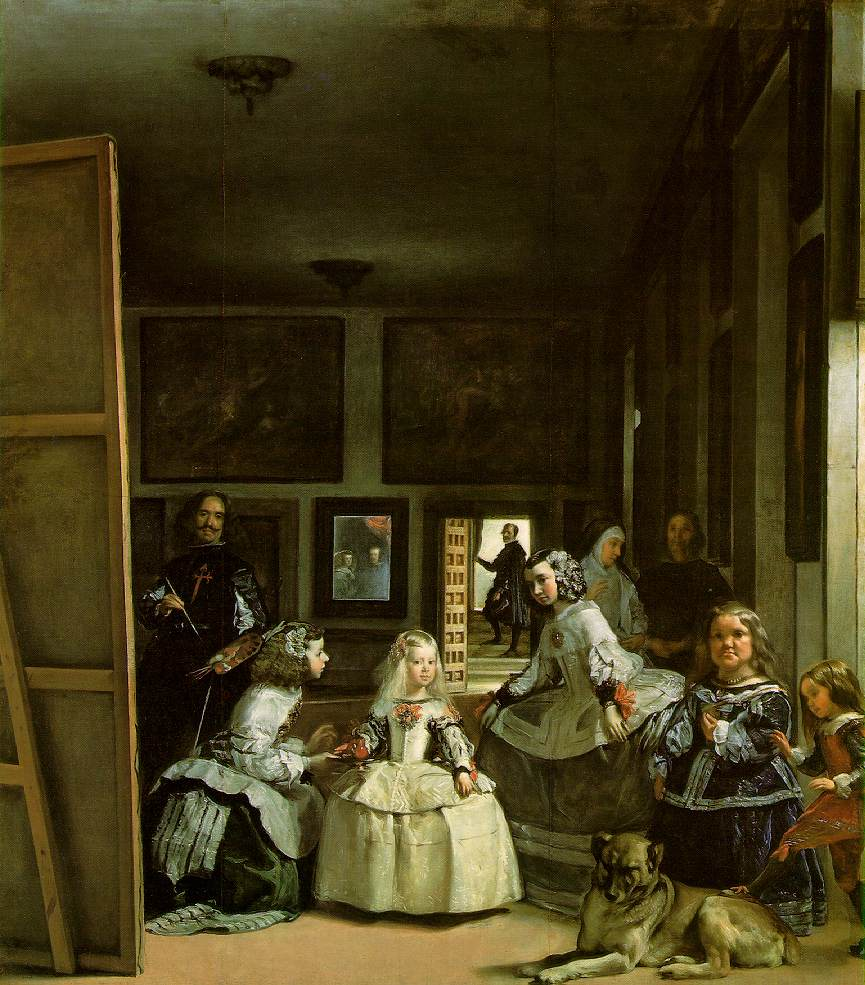

Velazquez Las Meninas
Museo del Prado Madrid
絵画のなかの絵画と讃えられる１６５６年にベラスケスが描いた「宮廷の侍女たち」で写真の機能である現実の描写だけでなくその時代背景と人間の内面を描いた傑作である スペインが７つの海を支配したフェリペⅡ世の孫フェリペⅣ世の王女マルガリータ５歳を中心に描いたもので世継ぎの王子が１７歳で亡くなった後王女の誕生を喜ぶさまと高齢のため世継ぎをあきらめたフェリペⅣ世のかすんだ姿が鏡に映し出されているさまは王家の先行きを暗示していると ともに筆をもつベラスケスのフェリペⅣ世に対する率直に喜べない複雑な眼差しが悲しみを誘う